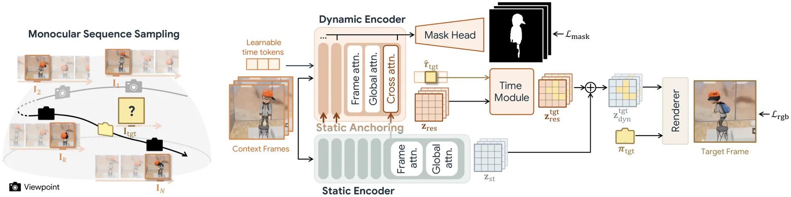
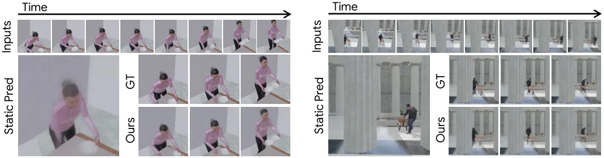
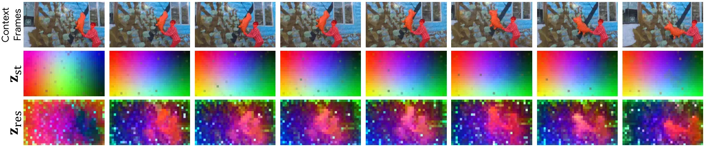
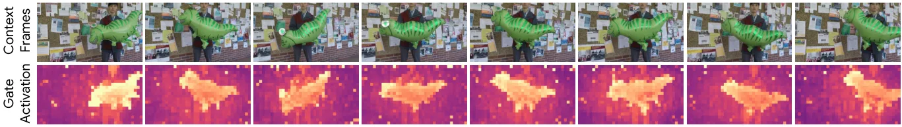
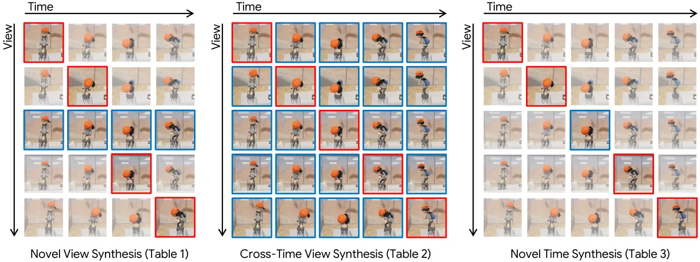

FL4N：用 latent 残差做前馈 4D 新视角合成
FL4N: Feed-forward Latent Model for 4D Novel View Synthesis
冻结静态 latent NVS 基座，只训练 8 层动态编码器 + 时间模块 + mask 头，把时间变化学成残差；训练只用同步多视图视频的 RGB 与二值动态 mask。NVS NVIDIA 20.435 dB（C4G 16.572）、CTVS 21.838（16.403）、NTS TUM 21.162（17.508），0.025 s/view、40 FPS。消融显示冻结渲染器是关键（解冻后 SSIM 掉到 0.68），静态基座 21.902 → 全模型 23.666（Kubric4D）。
PSNR on NVIDIA NVS
PSNR on N3DV
per-view runtime
ablation on Kubric4D
作者、单位与技术谱系 · Research context
作者与单位
研究脉络
- 静态前馈 latent NVS 基座（Szymanowicz et al., 2026）方法基座关系：FL4N 完全建立在这个冻结的静态 latent 新视角合成模型上：编码器、latent 与渲染器都不训练，本文只在其上挂动态残差分支。[论文 §4 实现细节]
- 4DGT / MoVieS / NeoVerse / C4G（前馈 4D 高斯路线）对照上游关系：这一系列把 4D 场景压成前馈高斯基元，是本文要反驳的“显式表示”路线；本文在三种协议、五个数据集上与它们逐项对比。[论文 Table 1–3]
- KAIST CVLab 的紧凑 3D 表示工作（An et al., CVPR 2026）团队前作关系：同一实验室此前研究“从前馈新视角合成中学紧凑 3D 表示”，本文把这条线延伸到 4D，用 latent 取代显式几何。[论文参考文献 [1]]
作者分层（学生组 / 末位通讯）与单位来自首页署名与脚注；三条脉络均可回指正文引用编号或表格分组。机构关系仅有 KAIST 与 DeepMind 的共同署名这一条公开证据，未推断导师关系。
方法本质拆解 · What actually changed
是不是微调？
是“冻结基座 + 训练残差分支”的部分微调：静态 NVS 模型完全冻结，只训练动态编码器（8 层 vs 静态 24 层）、时间模块与 mask 头，监督只有 RGB 合成损失加二值动态 mask，不需要深度或 3D 运动标注。
有没有额外约束？
除了图像重建损失，只有两项结构性约束：静态特征锚定（动态分支以静态编码器的中间特征为条件，防止重学几何）与动态 mask 损失（帮助定位动态区域、缓解深度歧义）。没有显式的多视图一致性损失或几何正则，解耦是靠异步 view-time 采样“采样出来”的。
推理/后端到底做了什么？
推理是一次前馈：给定若干上下文帧（可含位姿）与目标视角/时刻，编码成 latent 后由冻结渲染器直接出图，没有逐场景优化、没有测试时对齐；因此 0.025 s/view、40 FPS，比需要 2000 步位姿对齐的基线快三个数量级。
方法本质是什么？
本质是把“4D”从表示问题降级为残差问题：静态 latent 先验承担几何与外观，动态分支只学“相对于静态世界变了什么”。效果是绕开显式基元的时间不一致，同时大幅降低动态数据需求；代价是上限受基座强度约束，且真实位姿噪声会直接体现为像素错位。
输入单目/多视图视频与目标视角时间，冻结静态 latent 渲染器、只学时间残差编码器；不改显式几何，直接效果是 NVS 20.4 dB、CTVS 21.8 dB、40 FPS，并可用匹配/深度探针验证 latent 保留几何。

结论与问题Conclusion & Motivation
核心结论
4D 新视角合成不一定需要显式几何：把时间变化学成“冻结静态 latent 先验上的残差”，可以用很少的动态训练数据拿到比显式 4D 高斯更好的渲染质量，而且推理更快（0.025 s/view、40 FPS）。这个结论的方法论意义大于数字：它说明前馈模型的瓶颈可能不在“表示不够显式”，而在“动态分支没有和静态几何对齐”。作者用零样本匹配与视频深度探针进一步证明，latent 里保留了静态先验的几何信息，同时补进了时间线索——这比只看渲染 PSNR 更能说明表示没有退化。
动机与问题
4D NVS 是理解与模拟物理世界的基础能力，但优化式方法慢、多视角方法在野外不实用，单目前馈方法才是可落地的路线。现有单目前馈方案几乎都走显式 4D 高斯（4DGT、MoVieS、NeoVerse、C4G），问题在于显式基元本身就是时间不一致与空洞/模糊的来源：基元要同时承担几何与外观的时间变化，稍有误差就出现鬼影。作者要问的是：如果把 4D 场景先验完全编码进 latent，能不能既避开显式基元的伪影，又保持前馈推理的实时性，并且只用 RGB 监督就学到视角与时间的解耦。
方法Method
方法总览
基座是一个冻结的静态 latent 新视角合成模型（Szymanowicz et al., 2026）：它的编码器-渲染器映射保持不变，负责几何与静态外观。新增三部分：轻量动态编码器（沿用静态编码器架构但深度只有 1/3，8 层 transformer，每层加 cross-attention）、时间模块、动态 mask 头。动态编码器以静态特征为锚（static anchoring），只学时间残差；时间模块把帧间变化注入；mask 头在训练时提供动态区域监督，帮助解决深度歧义。训练数据是同步多视图视频（Kubric4D、CamxTime），通过采样异步的 (view, time) 组合构造输入，使模型在测试时能接受单目视频。
关键技术细节
异步采样是解耦视角与时间的关键：从 {1..V}×{1..T} 均匀采样 N 个 view-time 对作为输入，目标帧从剩余集合里取；固定视角隔离“物体运动”，固定时刻提供“多视角静态监督”，两种约束交替出现。冻结渲染器不是省事，而是必要：解冻会破坏 latent-to-image 映射，让动态分支训练失稳（消融里 SSIM 从 0.77 掉到 0.68）。残差分支以静态编码器的中间特征为锚点，避免动态分支重新学一遍几何。训练目标只有图像合成损失（外加二值动态 mask 损失），没有任何深度或 3D 运动标注。

实验Experiments
实验设置
三种评测协议：NVS（输入时刻的留出视角）、CTVS（单目视频下的未见视角-时刻组合）、NTS（时间上抽帧后合成中间时刻）。NVS/CTVS 用固定相机的多视图数据集 NVIDIA、N3DV、Kubric4D、CamxTime、Charge；NTS 用移动相机拍的单目视频 DyCheck、ADT、TUM。指标 PSNR / SSIM / LPIPS。对照为前馈高斯方法 4DGT、MoVieS、NeoVerse、C4G，其中 † 表示做了 2000 步测试时位姿对齐，Pose 列标注是否输入上下文相机位姿。运行时间在 224×224、单张 RTX 5880 Ada 上测。
实验数字与比较
NVS（Table 1）：FL4N 无位姿输入时 NVIDIA 17.945 / N3DV 18.581 / Kubric4D 20.916 / CamxTime 21.268 / Charge 20.924；给上下文位姿后升到 20.435 / 22.896 / 22.209 / 25.730 / 22.959。C4G 对应为 16.572 / 18.444 / 14.931 / 20.527 / 18.535，4DGT 为 16.127 / 17.813 / 14.148 / 17.125 / 18.017。CTVS（Table 2）：FL4N 21.552 / 24.550 / 23.547 / 24.546 / 24.222（无位姿），C4G 16.403 / 17.039 / 15.270 / 20.175 / 18.410。NTS（Table 3）：FL4N 19.019 / 19.693 / 17.847（无位姿）、20.527 / 24.115 / 21.162（有位姿）；C4G 15.755 / 18.900 / 17.508。Table 5：0.025 s/view、40 FPS、17.65 dB（NVIDIA），NeoVerse 0.027 s / 37 FPS，C4G† 23.885 s/view。
消融/失败边界
Table 4（Kubric4D，10k 步）给出清晰的因果链：静态基座（无残差分支）21.902 dB / 动态区域 13.161；加上残差分支但解冻渲染器，全帧 22.147 但 SSIM 掉到 0.681（比基线 0.727 还差），说明冻结渲染器是必要条件；去掉 mask 损失 22.929，训练后期容易塌缩；去掉静态锚定 23.608（SSIM 0.769）；全模型 23.666 / 0.773 / 动态区域 14.264。失败边界有两处：一是真实数据集上相机位姿本身有噪声，模型被迫估计略有偏差的位姿关系，导致像素轻微错位，SSIM 因此在两个真实数据集上被带测试时对齐的 C4G 反超；二是作者承认监督来自“自动生成的轨迹/掩码”，噪声会传导进 latent。
局限与迁移Limitations & Transfer
局限与待核验
作者明确承认的限制是：真实数据上位姿噪声会造成轻微错位，且评测协议由作者自建（三种设置、若干数据集组合），跨协议可比性需要自行核对。我们要核验：一是冻结的静态基座（Szymanowicz et al., 2026）是否公开可复现，动态分支的收益有多少依赖这个基座的强度；二是 Table 5 的 17.65 dB 与 Table 1 的 NVIDIA 20.435 dB 不同（前者应是 224×224、不同评测子集），跨表读数需谨慎；三是“最快 1.08×”是与 NeoVerse 比，而带位姿对齐的基线慢了三个数量级，这个对比对不同部署场景意义不同；四是 latent 探针只证明“有信息”，未证明“信息足以做几何估计”，探针本身还带一个训练好的 DPT 头。
与你研究路线的关系
这篇给我们两个可迁移的判断：第一，“显式 vs 隐式”不是价值判断，关键看动态分支是否与几何先验对齐——我们做几何基础模型的下游时，也应优先复用冻结的几何编码器、只学任务残差，而不是整网重训。第二，它示范了用下游探针（匹配、深度）验收表示质量，这比单一渲染指标更接近我们关心的“几何是否可信”，可以移植到我们评估点图/深度先验的流程里。下一步实验建议：在同一批序列上比较“冻结几何编码器 + 残差分支”与“端到端微调”的配对差异，同时报告渲染指标与几何探针指标（深度 AbsRel、匹配精度），看增益是否来自几何本身。







